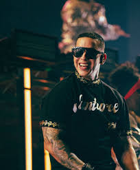
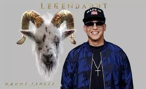
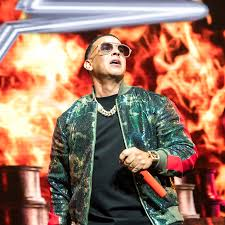
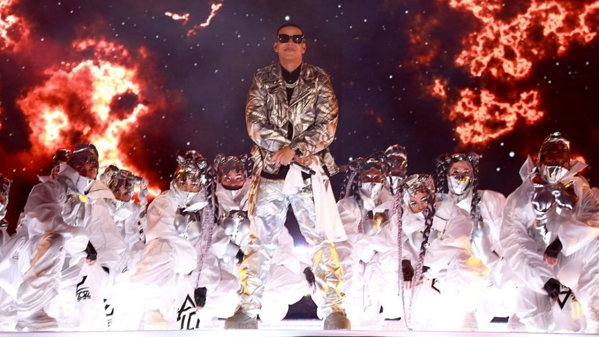

<!DOCTYPE html>
<html lang="es">
<head>
    <meta charset="UTF-8">
    <meta http-equiv="X-UA-Compatible" content="IE=edge">
    <meta name="viewport" content="width=device-width, initial-scale=1.0">
    <title>Daddy yankee</title>
    <link rel="shortcut icon" href="img/logo 1.jpeg" type="image/x-icon">
    <link rel="stylesheet" href="css/estilos.css">
</head>
<body>
    <section id="page">
        <header>
            <nav>
            </nav>
        </header>
    <article></article>
    <footer></footer>
    </section>
    </body>
</html>

   <section id="article">

    <!--Introduccion-->
    <article id="introduccion">
        <h2>introduccion de la pagina web</h2>
        <div class="line"></div>
        <div class="articleBody clear"></div>
        <figure>
            
        </figure>
        <p>
            <br><b>Nombre:</b> Griselda Patricia Duarte Flores</br>
            <br><b>Grado:</b> 1° Primero Desarrollo Software</br>
            <br><b>Seccion:</b> "B"
            <br><b>Departamento:</b> La Libertad</br>
            <br><b>Municipio:</b> Lourdes,Colon</br>
        </p>
        <p>
            En esta pagina podemos encontrar Informacion sobre el Artista reconocido Daddy Yankee. sus grandes exitos musicales informacion sobre su retiro de la musica urbana.
        </p>
    </div>
        </article>


<section id="page">
    <header>
        
        <nav class="clear">
            <ul>
                <li><a href="#nosotros">Acerca de Daddy Yankee</a></li>
                <li><a href="#canciones">Canciones</a></li>
                <li><a href="#Legendaddy">Legendaddy</a></li>
            </ul>
        </nav>
    </header>

    <section id="article">

        <!--Articulo nosotros-->
        <article id="nosotros">
            <h2>Acerca de daddy yankee</h2>
            <div class="line"></div>
            <div class="articleBody clear">
                <figure>
                    
                </figure>
                <p>
                    Ramón Luis Ayala Rodríguez, conocido artísticamente como Daddy Yankee, es un rapero, cantante, compositor, productor discográfico, locutor de radio y empresario puertorriqueño. Es considerado como el «rey del reguetón», tanto por los críticos como por los fanáticos de la música. Daddy Yankee es el artista que acuñó la palabra reguetón en 1991 para describir el nuevo género musical que estaba surgiendo en Puerto Rico y que sintetizaba ritmos de hip hop estadounidense, música caribeña hispana y reggae jamaiquino con rap y canto en español. A menudo es citado como una influencia por otros artistas urbanos latinos.
                </p>
                <p>
                   <br><b> Biografía</b></br>

Raymond Ayala creció en un humilde y conflictivo barrio de Río Piedras, antigua municipalidad anexionada a la capital, San Juan de Puerto Rico. No le desagradaba la escuela, pero su sueño era llegar a ser un profesional de béisbol, y sus gustos musicales eran los propios de su generación. Al entrar en la adolescencia, sin embargo, comenzó a interesarse por el break dance y particularmente por el rap, y empezó a cantar temas en este último estilo, con el que se sintió plenamente identificado.

Por esos años tuvo la ocasión de conocer a Pedro Gerardo Torruelas, un disc jockey independiente que, como la mayoría de los de su profesión, era más conocido por su nombre artístico: DJ Playero. Desde principios de los 90, esta figura clave en el desarrollo del reguetón venía produciendo grabaciones que mezclaban ritmos de reggae y de hip hop con recitaciones improvisadas en español. DJ Playero supo apreciar el potencial del joven Raymond y sus aptitudes para el rap, particularmente el ingenio que desplegaba en sus fluidas improvisaciones, y empezaron a colaborar en una serie de grabaciones que, pese su realización casi artesanal, pronto alcanzaron gran difusión entre la juventud de la isla. En la extensa discografía de DJ Playero, el álbum de mezclas Playero 34 (1990) fue el primero que acogió un tema interpretado por el joven debutante: Persígueme, no te detengas.
                </p>
            </div>
        </article>
    
        <!--Articulo Canciones-->
        <article id="canciones">
            <h2>canciones</h2>
            <div class="line"></div>
            <h3>regueton</h3>
            <div class="articleBody clear">
                <figure>
                    
                </figure>
                <p>
                   <br><b> Daddy Yankee: las 4 mejores canciones que marcaron su carrera</b></br>
                </p>
                <p>
                    Recuerda los principales temas de la carrera de Daddy Yankee, quien ha decidido terminar su carrera como cantante con una última gira mundial por varios países.
                </p>
                <p>
                  <br><b>1. “Shaky shaky”</b></br>
Luego de unos años, en los que su carrera era muy respetada, pero no conseguía el éxito de antaño, Daddy Yankee consiguió introducirse en el gusto de los fanáticos nuevamente con varias nuevas canciones, entre ellas “Shaky shaky”.
                </p>
                <video src="img/video 1.mp4" width="640px" height="480px"></video>
                <p>
                    <br><b>2.“Pose”</b></br>
                    Daddy Yankee es parte de lo que muchos llaman “reggaetón antiguo” y esta canción “Pose” fue una de las últimas que podían pertenecer allí pues luego vendrían producciones y colaboraciones un poco más modernas que se adaptaban al gusto de lo que la gente quería oír.
                </p>
                <p>
                    <br><b>3."Llegamos a la disco”</b></br>
Sin duda alguna, esta canción se convirtió en un himno para quienes llegaban a alguna discoteca en su grupo de amigos. Su coro era cantando con una gran emoción en cualquier fiesta.
                </p>
                <p>
                    <br><b>4.“Lo que pasó, pasó”</b></br>
                    Es una de las primeras canciones que Daddy Yankee posicionó en todo el continente. Es imposible que este tema no sea cantado a todo pulmón en una reunión o fiesta actual.
                </p>
                <p>
                    <br><b>5."china"</b></br>
                    es una colaboracion de unas grandes artistas del genero urbano como Anuel aa, Karol G, J balvin y Daddy Yankee.
                </p>
                <video src="img/video 2.mp4" width="640px" height="480px"></video>
                <p>
                    Al rededor de los años Daddy Yankee tiene muchos hit en su carrera musica y ha ganado demasiados premios en su trayectoria de artista urbano.
                </p>
            </div>
        </article>

        <!-- Articulo Legendaddy-->
        <article id="legendaddy">

            <h2>Legendaddy</h2>
            <div class="line"></div>
            <h3>Despedida de Daddy yankee de la musica</h3>
            <div class="articleBody clear">
                <figure>
                    
                   </figure>
                <p>
                    <br><b>Daddy yankee</b></br>
                    anunció el final de su carrera como cantante y su última gira mundial, entristeciendo a sus millones de fanáticos en toda América Latina y Estados Unidos pues este paso al costado deja una gran cantidad de éxitos, recuerdos y nostalgia en todos aquellos que alguna vez gozaron con un tema musical suyo desde que se hiciera muy famoso en los primeros años de la década del 2000, aunque mucho antes ya había iniciado en este ambiente.
                </p>
                <video src="img/video 3.mp4" width="640px" height="480px"></video>
                <p>
                    Decir que <b>Daddy Yankee</b> es el padre del reaggaetón se queda corto para todo lo que ha conseguido para él y para los demás artistas del mismo género, quienes encontraron las puertas abiertas para su arte en la industria musical gracias a todo lo que hizo el puertorriqueño cuando comenzó a crecer ininterrumpidamente hasta la actualidad.
                </p>
            </div>
            <h3>ultimos conciertos</h3>
            <div class="articleBody clear">
                <figure>
                    
                </figure>
                <p>
                    Conoce qué países visitará y las fechas de sus conciertos en la siguiente nota. Daddy Yankee llega a México en su último tour como profesional luego de anunciar su retiro de la música.
                </p>
                <p>
                    La “Última Vuelta World Tour” de Daddy Yankee contará con 42 presentaciones, que arrancaran en agosto y terminarán en diciembre, donde visitará ciudades como Oregon, Nueva York, Portland, San José, Las Vegas, Dallas, Boston, Santiago, Buenos Aires, Guayaquil, Panamá, Santo Domingo, Cali, Quito y Medellín, entre otras.
                </p>
                <p>
                    <br><b>Hipervinculo</b></br>
                    <br><a href="https://www.biografiasyvidas.com/biografia/d/daddy_yankee.htm">ir a la siquiente pagina</a></br>
                    <br><a href="https://cnnespanol.cnn.com/2022/03/20/daddy-yankee-retiro-legendaddy-huston-orix/">ir a la siquiente pagina</a></br>
                    <br><a href="https://mag.elcomercio.pe/fama/daddy-yankee-mejores-canciones-10-temas-que-marcaron-la-carrera-del-padre-de-reggaeton-gasolina-despacito-celebs-de-estados-unidos-nnda-nnlt-noticia/#:~:text=No%20hay%20tema%20m%C3%A1s%20importante%20en%20la%20carrera,marcar%C3%ADa%20un%20antes%20y%20despu%C3%A9s%20en%20su%20vida.">ir a la siquiente pagina</a></br>
                </p>
            </div>
        </article>
    </section>

    <footer>
        <p>Copyright 2020 - Daddy yankee</p>
    </footer>
</section>
</body>
</html>

        
        